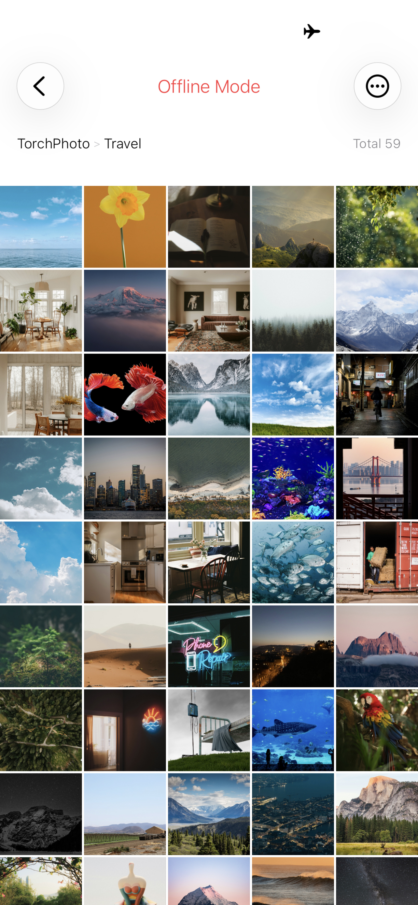
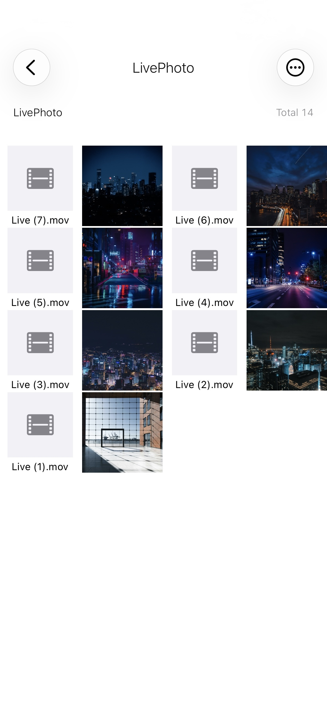
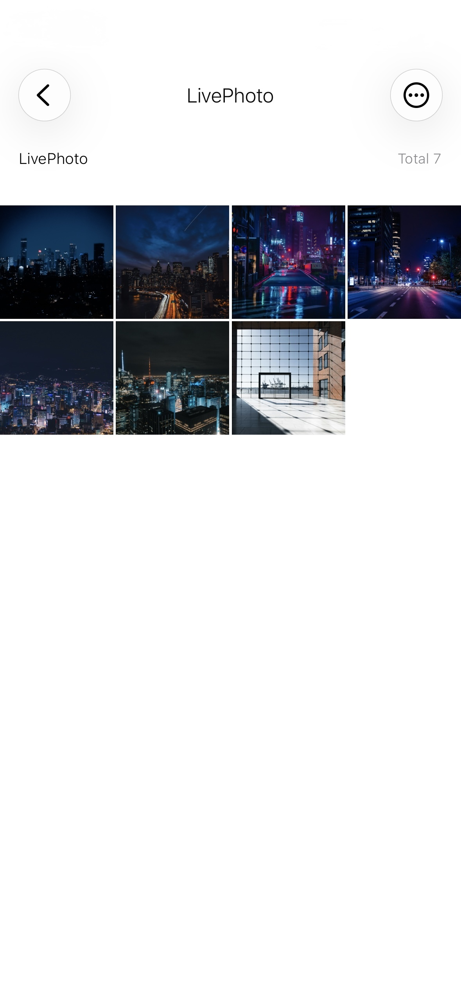
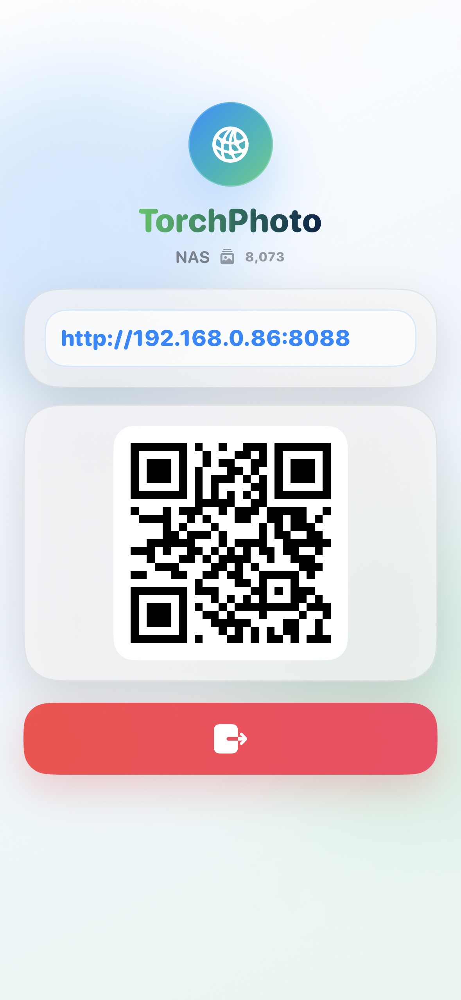
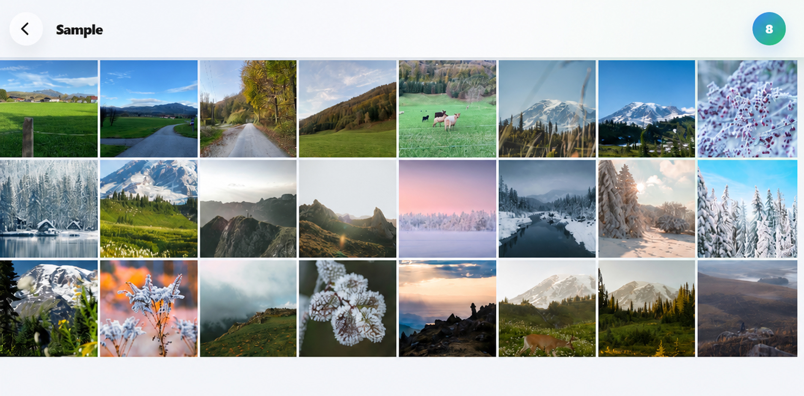

TorchPhoto supports FTP, SFTP, SMB, and WebDAV so your NAS or personal server can stay where photos and videos are backed up.
Instead of digging through folders or waiting through long thumbnail loading every time, browse those backed-up memories in a smooth gallery with prepared thumbnails, originals, uploads, and moments easy to revisit.
Built by a developer who uses TorchPhoto every day, it keeps improving through real backup, browsing, and sharing workflows.

When your iOS device loses internet access or your server connection becomes unstable, TorchPhoto can still let you explore compressed cached images that were already prepared.
It also remembers the folder path you were browsing, so offline mode feels less like starting over and more like returning to the same place in your private gallery.
TorchPhoto can treat one photo file and one video file as a single Live Photo style item, so backed up pairs feel more natural to browse.
Even though the original backup is stored as two separate files, the viewer presents them together like one Live Photo for a cleaner and more familiar viewing experience.


With Wi-Fi Gallery Share, devices on the same Wi-Fi network can open your TorchPhoto gallery through a browser such as Safari or Chrome.
It loads thumbnails generated on your iOS device first, then naturally switches to the original image for clearer viewing.


Register a server using FTP, SFTP, SMB, or WebDAV, generate thumbnails, and start exploring your media in a smoother gallery-style flow.
Connect your server once and keep your existing folder structure ready for browsing.
Create lightweight thumbnails for folders so large photo and video collections feel faster to open.
Explore your media like a gallery with quick previews, smooth scrolling, and easier revisiting.
TorchPhoto does not send your photos, videos, or server credentials to PixelBrick servers. Media transfers occur directly between your iPhone or iPad and the server you configure. Thumbnails, favorites, captions, and cache data are stored locally on your device.
See the key differences at a glance and choose the experience that fits your workflow.